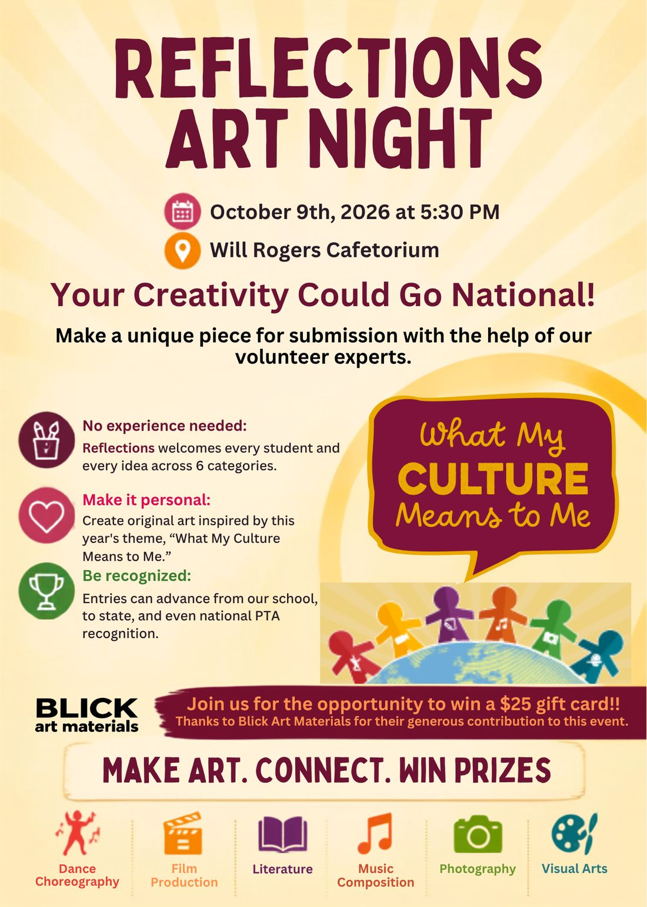

Tema 2026–27: «What My Culture Means to Me»

Noche de Arte Reflections · viernes 9 de octubre · 5:30 p. m.
Acompáñanos en el Cafetorium de Will Rogers para una noche práctica de creación. Haz una obra única para tu entrada de Reflections con la ayuda de nuestros voluntarios expertos, ¡y participa por una tarjeta de regalo de $25 de Blick Art Materials solo por venir!
Gracias a Blick Art Materials por su generosa contribución a este evento.
¡Tu creatividad podría llegar al nivel nacional!
Entrega hasta el viernes 16 de octubre de 2026
Tema: «What My Culture Means to Me» (Lo que mi cultura significa para mí) · Danza, cine, literatura, música, fotografía y artes visuales
¿A tu estudiante le encanta dibujar, bailar, cantar, escribir, tomar fotos o hacer películas? Reflections es su escenario. Cada año, más de 300,000 estudiantes desde preescolar hasta el grado 12 crean obras de arte originales en respuesta a un tema elegido por estudiantes. Este programa de la PTA Nacional, con más de 50 años, ayuda a los niños a explorar sus propios pensamientos, sentimientos e ideas, ganar confianza y descubrir un amor por crear que los acompaña en todo lo que hacen.
Se invita a los estudiantes de Will Rogers a presentar sus obras terminadas en una o todas las seis categorías:
Los estudiantes participan en la división correspondiente a su grado: Primaria (Preescolar – 2.º grado), Intermedia (3.º a 5.º grado), Secundaria (6.º a 8.º grado), Preparatoria (9.º a 12.º grado) y Artista Especial (todos los grados bienvenidos).*
*Los estudiantes que se identifican como personas con una discapacidad y que pueden recibir servicios bajo IDEA o la Sección 504 de ADA pueden participar en la División de Artista Especial o en la división de grado más acorde con sus capacidades.
Lee las pautas de cada categoría y las reglas oficiales, y entrega tu obra terminada con el formulario de inscripción a más tardar el viernes 16 de octubre. El formulario y los detalles de entrega están en el boletín semanal. ¿Preguntas? Escribe a reflections@willrogerspta.com.